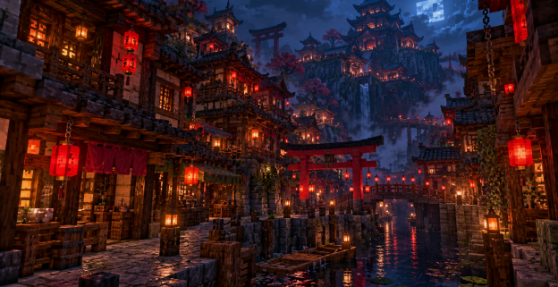
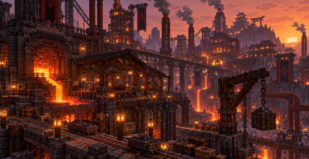
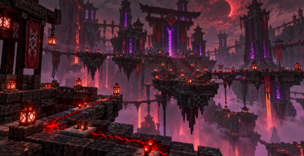

KAISEN — Minecraft MMO-RPG в мире Японии будущего.
Традиционные пагоды, тории и туманные горы соседствуют с мастерскими и технологиями. За знакомыми фасадами открывается мир со своими правилами и историями.
Исследуй четыре региона, выбери один из пяти классов, выполняй задания и объединяйся с другими игроками. Твой путь в KAISEN начинается с первого шага.
МИР ПО ТУ СТОРОНУ ТОРИИ

01 / KAISEN
ТРУЩОБЫ
Под облезшей краской ещё видны украшения богатых домов. Когда-то здесь решали судьбу страны, теперь торгуются за чистую воду и место под целой крышей. В сырых дворах продолжается жизнь. По вечерам люди запирают двери и надеются, что этой ночью платить больше не придётся.

02 / KAISEN
РАБОЧИЙ ЦЕХ
Грохот машин, жар печей и улицы, где смена никогда не заканчивается для всех сразу. Из местных шахт поднимают богатства, которыми живёт вся страна. Но тем, кто добывает их своими руками, достаётся лишь усталость. Здесь исправно работает всё - кроме обещаний лучшей жизни.
03 / KAISEN
ГОРОДСКОЙ ЦЕНТР
За стенами старых дворцов растут башни, а по освещённым улицам ходит вооружённая охрана. Здесь можно купить почти всё - кроме права не подчиняться. Пока влиятельные дома делят богатство, обычные жители учатся не задавать лишних вопросов и узнавать, чьи люди стоят у ворот.

04 / KAISEN
НЕТ-ПРОСТРАНСТВО
Внутри городской сети скрыт цифровой мир. Здесь остались забытые архивы и копии давно умерших людей. В них можно найти ответы на то, что случилось со страной. Но некоторые записи появились уже после смерти тех, кто их оставил.